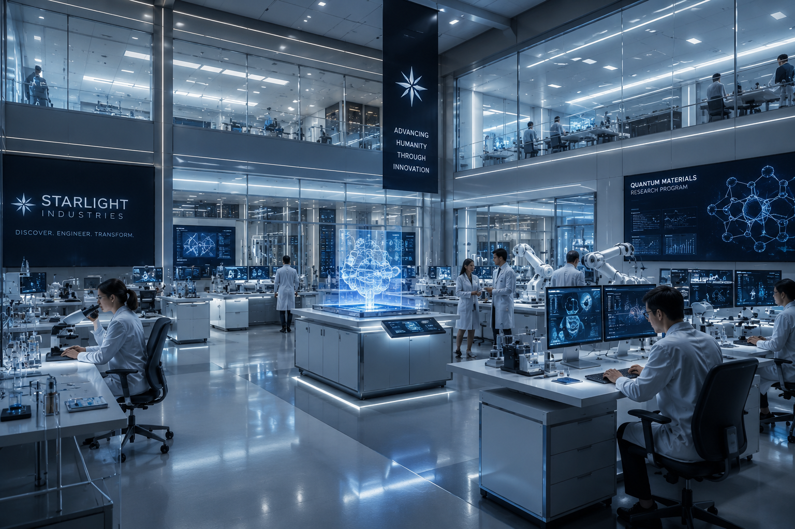
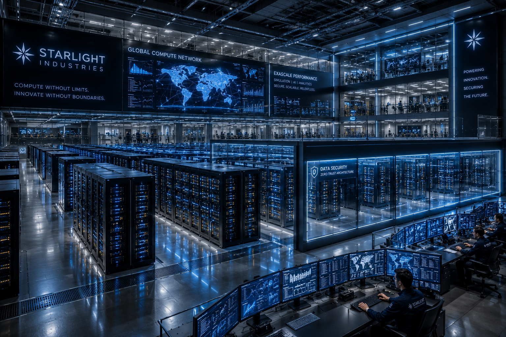
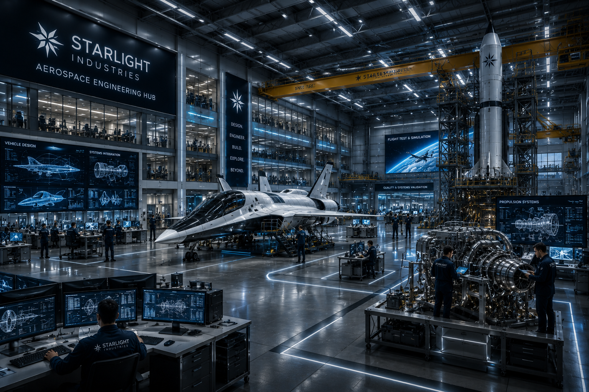
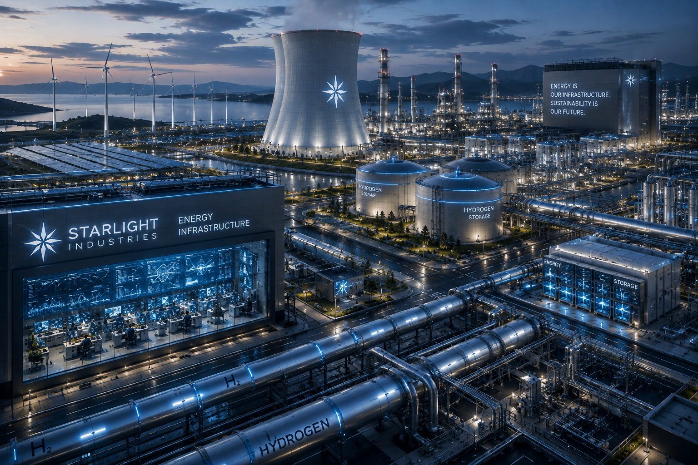
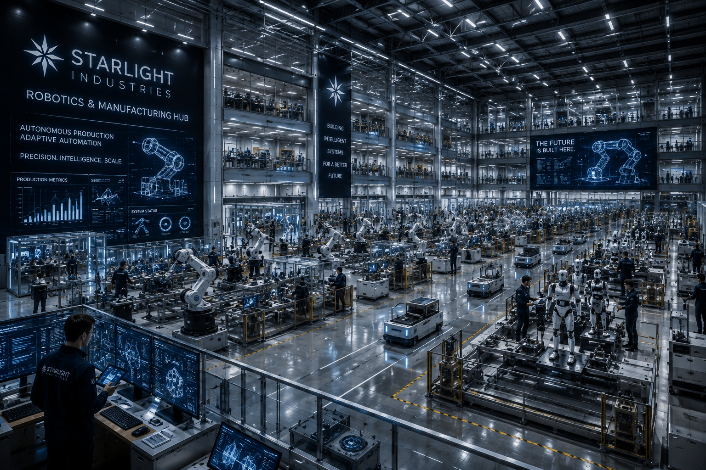
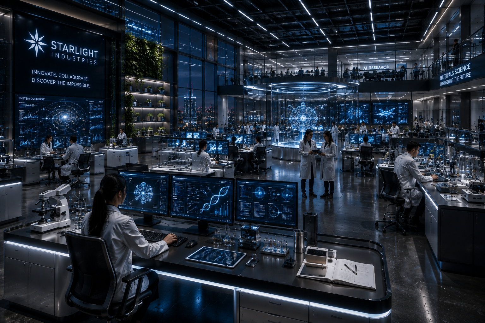
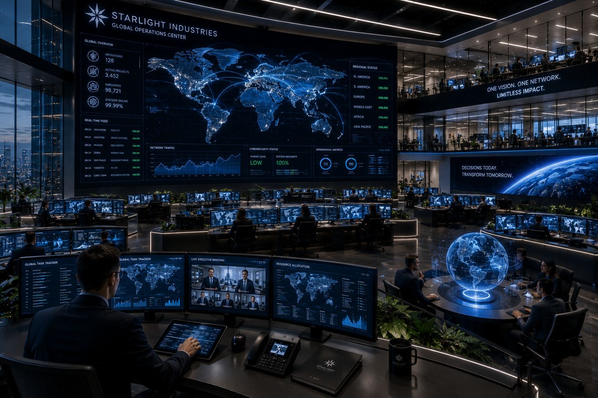

THINK BIG.
We Work On Problems That Do Not Have Easy Answers. Curiosity And Ambition Are Encouraged At Every Level.
We Bring Together Scientists, Engineers, Designers, Researchers And Leaders Who Want To Work On Problems That Matter.
At STARLIGHT, You Are Not Simply Filling A Role. You Are Contributing To Technologies, Systems And Ideas That Can Change The World.
We Work On Problems That Do Not Have Easy Answers. Curiosity And Ambition Are Encouraged At Every Level.
Ideas Matter, But Execution Matters More. Our Teams Turn Research And Concepts Into Technologies That Operate In The Real World.
Scientists, Engineers, Designers, Analysts And Leaders Work Across Disciplines To Solve Problems That No Single Field Can Solve Alone.
The Work You Do Here Should Matter Beyond Your Job Description. We Build Things Designed To Last Beyond Us.
STARLIGHT Brings Together People From Different Disciplines To Build Technologies At A Scale Few Organizations Can Match.
Build Intelligent Systems, Advanced Computing Platforms, Software And Digital Infrastructure.
Engineer Aircraft, Spacecraft, Orbital Infrastructure And Systems That Extend Humanity Beyond Earth.
Develop The Generation, Storage And Distribution Technologies That Power Cities And Industries.
Create Intelligent Machines And Autonomous Systems Designed To Work Alongside Humanity.
Explore Fundamental Science And Experimental Technologies That Could Define The Next Generation.
Shape Capital, Investments, Strategy And The Financial Systems That Allow STARLIGHT To Operate At Global Scale.
The Technologies Of STARLIGHT Begin With People Who Ask Better Questions, Challenge Assumptions And Refuse To Accept That Something Cannot Be Done.
Our Teams Bring Together Scientists, Engineers, Researchers, Designers, Analysts And Leaders From Different Disciplines And Perspectives.
Together, They Turn Knowledge Into Systems, Products And Infrastructure That Operate At A Global Scale.
STARLIGHT Industries Operates A Vast Ecosystem Of Research Facilities, Advanced Infrastructure, Manufacturing Centers And Environments Designed To Turn Ideas Into Reality.
The Global Command Center Of STARLIGHT Industries.

Advanced environments where new technologies are discovered, tested and engineered.

High-performance computing infrastructure supporting STARLIGHT's digital systems.

Engineering environments dedicated to aircraft, spacecraft and orbital technologies.

Advanced systems designed to generate, store and distribute energy at scale.

Intelligent manufacturing environments where autonomous machines become reality.

Strategic environments where the future of STARLIGHT Industries is shaped.

Collaborative environments built for scientists, engineers and innovators.

Coordinating STARLIGHT's worldwide network of technology, infrastructure and operations.